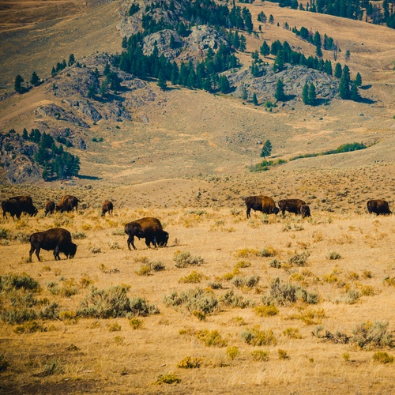
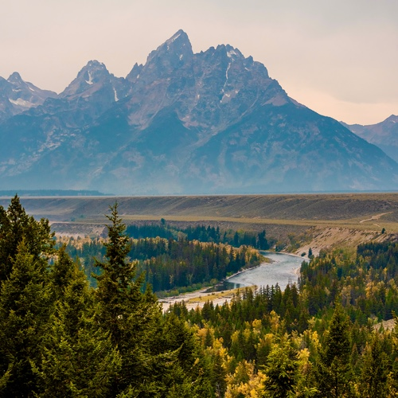
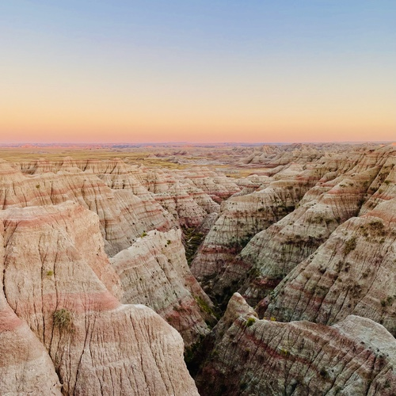

Visit our National Parks
Visiting our national parks provides an unequaled chance to see the beauty of nature and the diverse wildlife that lives inside these protected environments. These sanctuaries not only give a welcome respite from the hustle and bustle of city life, but they also serve as vital havens for several plant and animal species. Exploring national parks fosters a profound awareness for our environment and a dedication to its preservation. These parks offer to a wide range of interests and ages, with everything from breathtaking vistas and tranquil lakes to demanding hikes and educational activities. Individuals are motivated to become stewards of the world after witnessing the beauty of our national parks firsthand, fighting for conservation and sustainable practices to guarantee these treasures stay intact for future generations.
Over the last few years, I've passionately pursued a personal goal: visiting at least one National Park in each state of the United States.These journeys have been a great adventure, giving me a first-person view of the breathtaking natural splendor that covers our country. Standing under Yellowstone National Park's geothermal marvels, where geysers erupt and paint the sky with water rich in minerals, or taking in the towering peaks of the Grand Tetons, where untamed mountains meet peaceful alpine lakes in an amazing show of contrast. Not to mention the unearthly settings of Badlands National Park, where the passage of time has carved out an uncanny panorama of layered rock formations and huge plains. The beauty and diversity that characterize the United States' natural heritage are each exemplified by the top three national parks I have visited so far.
Yellowstone National Park

The first national park in the world, Yellowstone, was created on March 1, 1872. The park is primarily in Wyoming,
although it also includes parts of Montana and Idaho. This National Park is home to spectacular canyons, alpine rivers,
lush forests, hot springs, and gushing geysers, including the most well-known in the park, Old Faithful.
Learn more
Grand Teton National Park

Grand Teton National Park is a stunning national park in Wyoming.With 310,000 acres of terrain ranging from summery wildflower meadows to
rushing whitewater streams, this genuinely unique federal park features a complex ecosystem. These ancient mountains also house some of the
National Park Service's oldest rocks, dating back roughly 2.7 billion years.
Badlands National Park

Nestled in Southwestern South Dakota, Badlands National Park emerges as an exquisite gem
in North America's landscape. Encompassing more than 244,000 acres of diverse mixed grass
prairie and breathtaking geological wonders, it presents a truly mesmerizing spectacle to behold.
Learn more